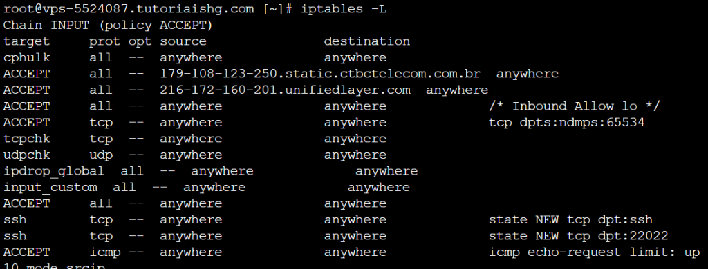

◉ Iptables
Iptables é uma ferramenta de firewall para sistemas Linux que atua como uma espécie de “guarda de
fronteira” entre o seu computador e a internet. Ela permite controlar o tráfego de rede, decidindo
quais conexões são permitidas e quais são bloqueadas.
Imagine o iptables como um segurança que verifica cada pacote de dados que chega ou sai do seu
dispositivo, verificando se eles têm permissão para passar ou se devem ser barrados de acordo com as
regras definidas.
Essas regras podem ser configuradas para permitir que certos tipos de tráfego, como navegação na web,
passem livremente, enquanto bloqueiam outras atividades maliciosas, como tentativas de invasão ou
acesso não autorizado ao seu sistema.
◉ Tabelas e cadeias (Tables and chains)
No iptables, existem quatro tabelas principais, cada uma com suas cadeias (chains) e propósitos
específicos:
• Tabela “filter”: Essa é a tabela padrão do iptables e é usada para filtrar o tráfego de pacotes com
base em regras definidas. As três cadeias padrão nesta tabela são:
INPUT: Essa cadeia lida com pacotes destinados à própria máquina (tráfego de entrada).
OUTPUT: Essa cadeia lida com pacotes originados na própria máquina e enviados a outros destinos
(tráfego de saída).
FORWARD: Essa cadeia lida com pacotes que estão apenas passando pelo sistema, atuando como um
roteador.
• Tabela “nat” (Network Address Translation): Essa tabela é usada para realizar a tradução de endereços
de rede, geralmente usada para redirecionamento de portas (port forwarding) ou para mascaramento de
endereços IP (SNAT – Source Network Address Translation). As cadeias padrão nesta tabela são:
PREROUTING: Essa cadeia é utilizada para modificar pacotes antes de serem roteados, permitindo o
redirecionamento de portas.
OUTPUT: Esta cadeia é usada para modificar pacotes gerados localmente antes de saírem do sistema.
POSTROUTING: Esta cadeia é utilizada para modificar pacotes após o roteamento, geralmente usada para
mascaramento de IP (SNAT).
• Tabela “mangle”: A tabela mangle é usada para modificar os cabeçalhos dos pacotes. É usada
principalmente para marcação de pacotes para posterior manipulação por outras regras ou ferramentas.
As cadeias padrão nesta tabela são:
PREROUTING: Usada para modificar pacotes antes de serem roteados.
INPUT: Usada para modificar pacotes de entrada antes de serem entregues localmente.
FORWARD: Usada para modificar pacotes que estão apenas passando pelo sistema.
OUTPUT: Usada para modificar pacotes de saída antes de deixarem o sistema.
OUTPUT: Usada para modificar pacotes de saída antes de deixarem o sistema.
POSTROUTING: Usada para modificar pacotes após o roteamento.
• Tabela “raw”: Essa tabela é usada principalmente para controlar o rastreamento de conexões, permitindo
que os pacotes escapem do rastreamento feito pela tabela “conntrack”. As cadeias padrão nesta tabela
são:
PREROUTING: Usada para modificar pacotes antes de serem roteados.
OUTPUT: Usada para modificar pacotes gerados localmente antes de saírem do sistema.
Isso é bastante informação se você está vendo pela primeira vez, mas não se preocupe, as tabelas 2,
3 e 4 são utilizadas principalmente por administradores mais avançados e precisam de regras mais
complexas para seus firewalls. A tabela 1 costuma ser a que mais importa para a maioria das regras
básicas.
◉ Políticas padrão (Default Policies)
As “políticas padrão (default policies)” do iptables podem ser comparadas às regras iniciais de
boas-vindas que você estabelece para todos os convidados da sua festa antes de fazer ajustes
específicos para atender às suas necessidades de segurança e preferências. É como se você definisse
previamente o comportamento padrão para o tráfego de entrada, saída e encaminhado, caso nenhuma
regra específica seja aplicada a eles.
A política de uma cadeia pode ser configurada com três valores possíveis:
ACCEPT: O tráfego correspondente é permitido.
DROP: O tráfego correspondente é silenciosamente descartado, sem enviar nenhuma resposta.
REJECT: O tráfego correspondente é descartado, mas é enviado uma resposta ICMP ao remetente
informando que a conexão foi rejeitada.
Veja um exemplo de regra do iptables:
iptables -P INPUT ACCEPT
iptables -P FORWARD DROP
iptables -P OUTPUT ACCEPT
Como não foi especificado a tabela dessa regra, por padrão a tabela selecionada é a filter (Tabela 1).
A flag -P configura uma política padrão na cadeia.
Linha 1: A cadeia é INPUT e a política padrão definida é ACCEPT.
Linha 2: A cadeia é FORWARD e a política padrão definida é DROP.
Linha 3: A cadeia é OUTPUT e a política padrão definida é ACCEPT.
◉ Comandos básicos do iptables
Existem comandos básicos para gerenciar o iptables através da linha de comando, confira a seguir
alguns comandos básicos:
• Exibindo as regras atuais: Para verificar as regras já existentes no iptables, utilize o comando:
sudo iptables -L
Isso listará as regras para todas as tabelas padrão (filter, nat e mangle).

• Limpando as regras: Caso você tenha regras existentes que não deseja mais, pode limpá-las utilizando:
sudo iptables -F
Atenção! Essa opção remove todas as regras de todas as cadeias (chains) nas tabelas. Para especificar
uma tabela use o padrão abaixo:
sudo iptables -F FORWARD
Este comando limpa todas as regras da cadeia FORWARD.
-F: Indica que queremos limpar todas as regras da cadeia especificada.
FORWARD: Especifica a cadeia a ser limpa.
• Adicionar uma regra para bloquear tráfego de saída:
sudo iptables -A OUTPUT -o eth0 -p udp --dport 53 -j DROP
Neste exemplo, estamos adicionando uma regra à cadeia de saída (OUTPUT) que bloqueia tráfego UDP
na porta 53 (porta padrão do DNS) na interface de rede “eth0” (interface de rede de saída) e
direcionando-o para a ação “DROP”, que descarta o pacote.
-A: Adiciona a regra à cadeia especificada.
-o: Especifica a interface de rede de saída para onde o tráfego está sendo enviado.
-p: Especifica o protocolo do pacote (neste caso, UDP).
--dport: Especifica a porta de destino do pacote.
-j: Indica a ação a ser tomada se a regra for correspondida (neste caso, DROP).
• Remover uma regra específica:
sudo iptables -D INPUT 3
Este comando remove a terceira regra da cadeia de entrada (INPUT).
-D: Indica que estamos excluindo uma regra.
INPUT: Especifica a cadeia da qual a regra será removida.
3: É o número da regra que será excluída. Você pode ver os números das regras usando o comando
iptables -L numerado.
Abrindo uma porta específica: Vamos supor que você deseje permitir o tráfego na porta 22 para
permitir conexões SSH.
Essas são apenas algumas das muitas possibilidades do iptables. Lembre-se de que, ao alterar as
regras do firewall, é importante ter cuidado para não bloquear o acesso ao seu sistema
inadvertidamente. Sempre teste suas regras antes de aplicá-las permanentemente, especialmente se
estiver trabalhando remotamente em um servidor.
◉ Salvando e restaurando regras
Uma parte essencial da administração do iptables é a capacidade de salvar e restaurar as regras
criadas no firewall. Isso é particularmente importante porque, ao reiniciar o sistema ou após uma
falha, todas as regras definidas serão perdidas se não forem salvas adequadamente.
Aqui estão as etapas para salvar e restaurar as regras do iptables de forma fácil e segura:
• Salvando as regras: Para salvar as regras do iptables, você precisa usar o comando iptables-save.
Este comando exibe as regras do iptables em um formato legível por máquina, permitindo que você
redirecione a saída para um arquivo.
Passo a passo:
1- Abra o terminal ou a linha de comando no seu sistema.
2- Use o comando iptables-save para exibir as regras atuais do iptables no seu terminal.
3- Redirecione a saída para um arquivo de texto. Por exemplo, para salvar as regras em um arquivo chamado
regras-iptables.txt, você pode usar o seguinte comando:
iptables-save > regras-iptables.txt
• Restaurando as regras: Após salvar as regras em um arquivo, você pode restaurá-las a qualquer
momento usando o utilitário iptables-restore. Esse comando lerá o arquivo de texto contendo as
regras salvas e as aplicará no iptables.
Passo a passo:
Verifique se você tem um arquivo contendo as regras salvas. No nosso exemplo, o arquivo é
regras-iptables.txt.
Abra o terminal ou a linha de comando no seu sistema.
Use o comando iptables-restore e especifique o arquivo contendo as regras para restaurá-las:
iptables-restore < regras-iptables.txt
Dicas importantes:
Certifique-se de que está executando os comandos acima com privilégios de superusuário (root)
para que as alterações sejam aplicadas corretamente.
Sempre salve as regras em um local seguro, preferencialmente fora do diretório /tmp, para evitar
perdas acidentais ou exclusão durante a limpeza do sistema.
Ao restaurar regras, verifique se você está restaurando para o mesmo ambiente ou sistema semelhante,
pois regras incompatíveis podem causar problemas na rede.
Dica Pro: Para evitar a perda de regras toda vez que o sistema é reiniciado, você pode automatizar
o processo de restauração durante o processo de inicialização utilizando uma cronjob. Para isso, você
pode criar um script que contém o comando iptables-restore com o arquivo de regras adequado e, em
seguida, configurar esse script para ser executado na inicialização do sistema (usando: "@reboot
comando_a_ser_executado").
Considerações Finais
Este texto abordou diversas características do iptables, mas há muito mais para aprender sobre suas
funcionalidades avançadas e opções adicionais. Certifique-se de consultar a documentação oficial e
tutoriais para aprofundar seus conhecimentos e utilização do iptables.
Outro ponto interessante, é que já abordamos em outro artigo como abrir e fechar portas de um servidor
da HostGator pelo WHM que utiliza uma ferramenta gráfica que manipula o iptables tornando mais
prático a criação de certas regras para o usuário.